Awaiting your pick per family. Every candidate is rendered live through the NEW iso-aware sampler on a settled demo map.
Already applied to the live world this round (your prior decisions):
· Forest floor/path = candidate B — now live as tex-forestfloor / tex-forestpath.
· Village grass = candidate A (the brighter saturated green) — now live as tex-grass.
· Dithered organic blend (mode 1) is now the default for all organic material boundaries.
· Iso-aware STRUCTURED sampling is live for every structured material (cobble, deck, plank): one world-anchored
pattern space projected through the iso basis — pattern courses run along the grid diagonals at honest world scale.
This kills the overlapping-tile double-exposure and the "far too large" problem.
· Deck PLATFORM system is live in the Dellhollow / landing / stairs decks: deck tiles are built up into a pier with
auto edge fascia (the plank side/beam) + stilt posts descending into the water, water rendered visibly UNDER the edge,
HARD boundary (no blend).
B is live now. This offers ONE warmed variant to confirm against: B's soft low-frequency painterly treatment kept,
but pushed to a warmer, more saturated autumn hue (toasted amber / russet). Two trees for scale; the path curves through.
Pick: keep B, or switch to warmed-B.
Grass stays candidate A (live). These are the re-rolled COBBLE sets: warm muted stone at honest ~0.2m scale,
generated as straight regular courses and rendered through the iso sampler so the courses run along the grid axes —
continuous-sampled (no overlap), a grass corner + dirt corner for sibling context. Stall + barrel for scale.
Pick one cobble.
Small squarish setts in even courses, warm grey-brown & taupe, faint mortar seams, very calm.
C
C — worn river cobbles
cobble
Smooth worn river cobbles, warm sandy-greige & soft ochre-brown, a couple of quiet warm flecks.
DELLHOLLOW — water, in its true context under the deck PLATFORM · A / B / C
The flagship. The deck is now a BUILT pier (edge fascia + stilts + water under the lip); the cliff stays for now.
Re-pick the WATER with real deck edges over it. Same platform map for all three; only the water/deck/cliff textures change.
Lockwall + rowboat for scale. Pick one water.
A
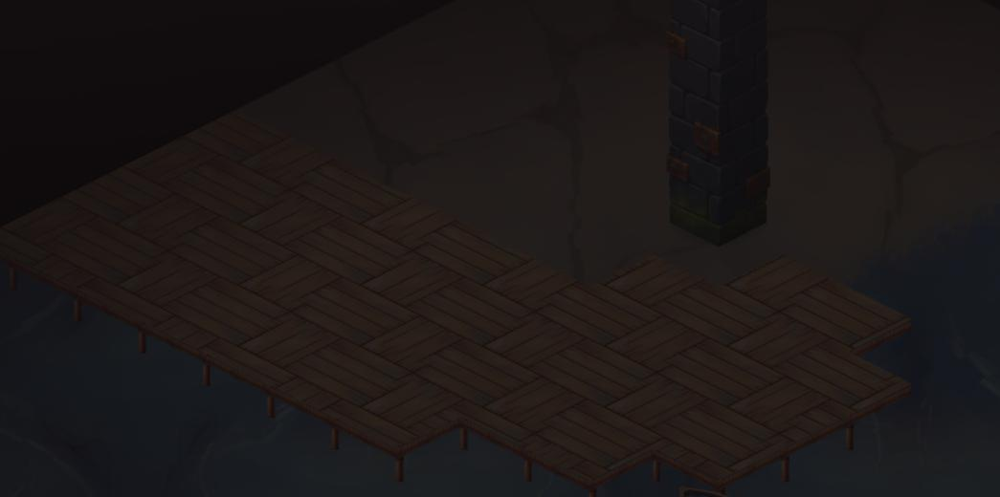
A — teal rippled water, basket-weave deck
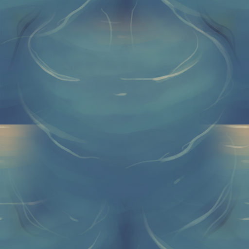
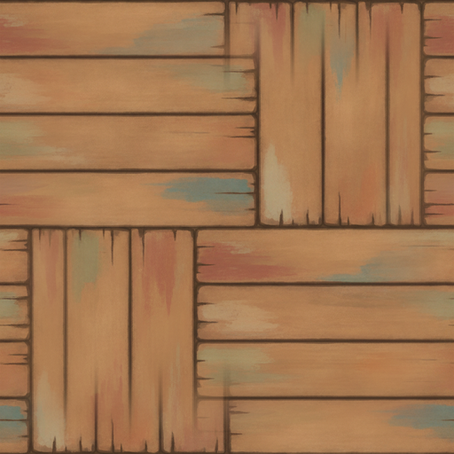
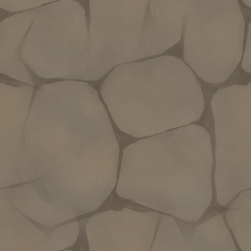
water · deck · cliff
Teal-to-blue water with soft ripple bands (depth + slow movement); cool stone cliff.
B
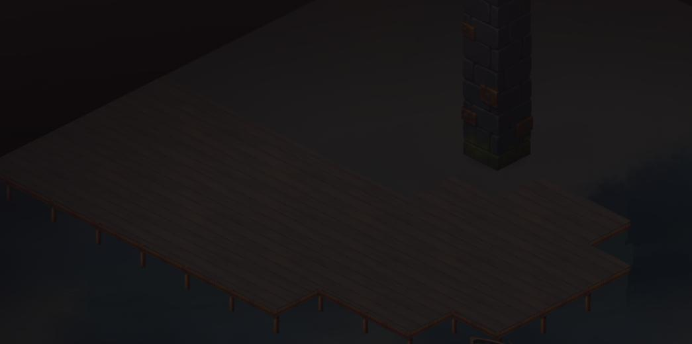
B — deep still blue-green water
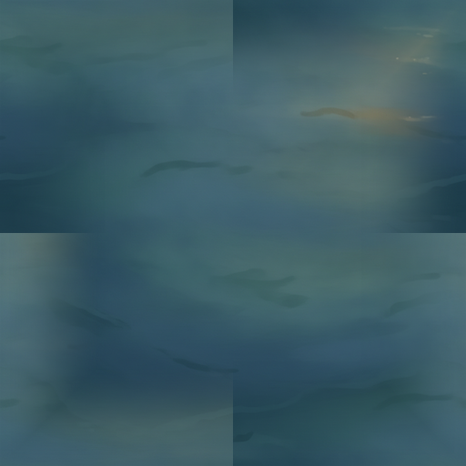
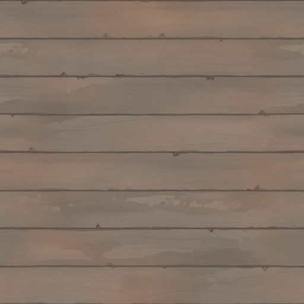
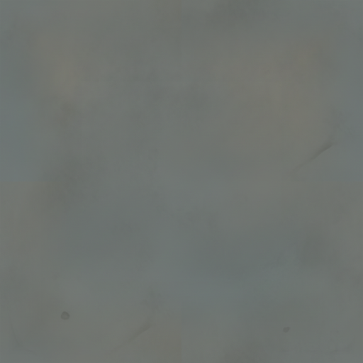
water · deck · cliff
Deep still muted blue-green, slow flow gradients; smoother soft-painterly deck.
C
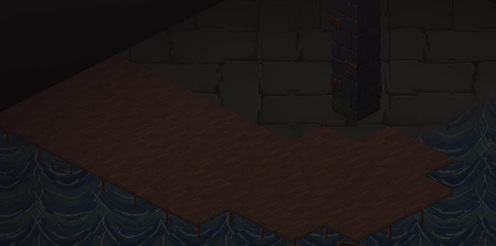
C — chevron-ripple moving water, stacked-stone cliff
close — the built pier edge: plank fascia, stilt posts, water under the lip
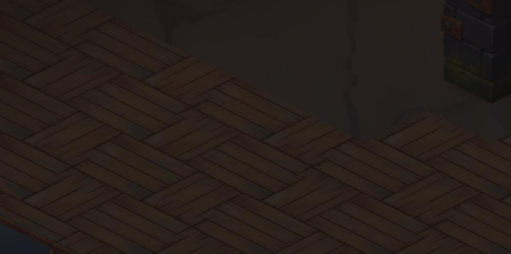
close — deck top (iso boards) meeting the stacked-stone cliff
The deck is no longer a texture blended into the water — it is a raised structure with a hard edge. Compare against the old
blended deck baseline (dell-baseline-wide.jpg in the previous round).
INTERIOR — plank (regenerated, iso-aware) · A / B / C
Re-rolled at honest board width and rendered through the iso sampler: narrow boards running straight along a grid axis,
staggered seams. Live interiors still use the old f-plank until you pick. Table + stool for scale. Pick one plank.
A
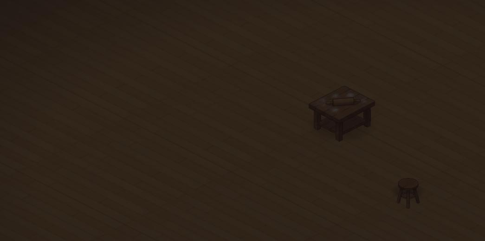
A — warm honey-oak boards
plank
Warm honey-oak, tidy cel-shaded narrow boards, fine darker seams.
B
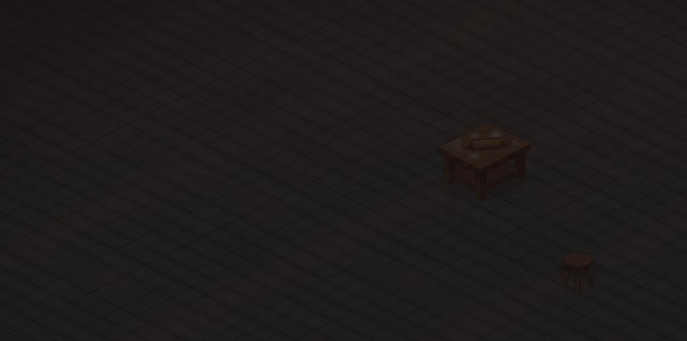
B — weathered grey-brown boards
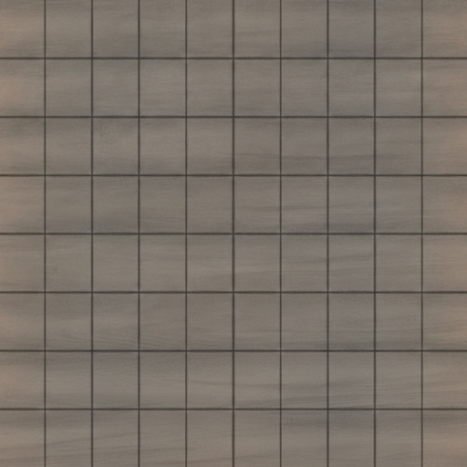
plank
Soft-painterly weathered grey-brown timber, gentle wear, calmer and cooler.